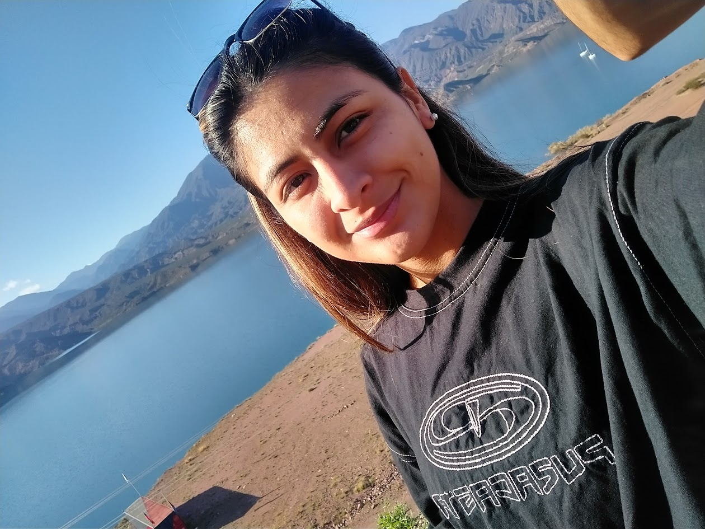

¡Hola! mi nombre es Jennifer, tengo 27 años y vivo en Rafael Castillo. Soy estudiante de Diseño y Comunicación Visual en UNLa, actualmente cursando el último tramo de la carrera. Me considero como una persona detallista y organizada, con inclinación hacia el diseño editorial y la tipografía. Me encuentro en la búsqueda de mi primera experiencia laboral en el sector, con muchas ganas de volcar mis conocimientos académicos.